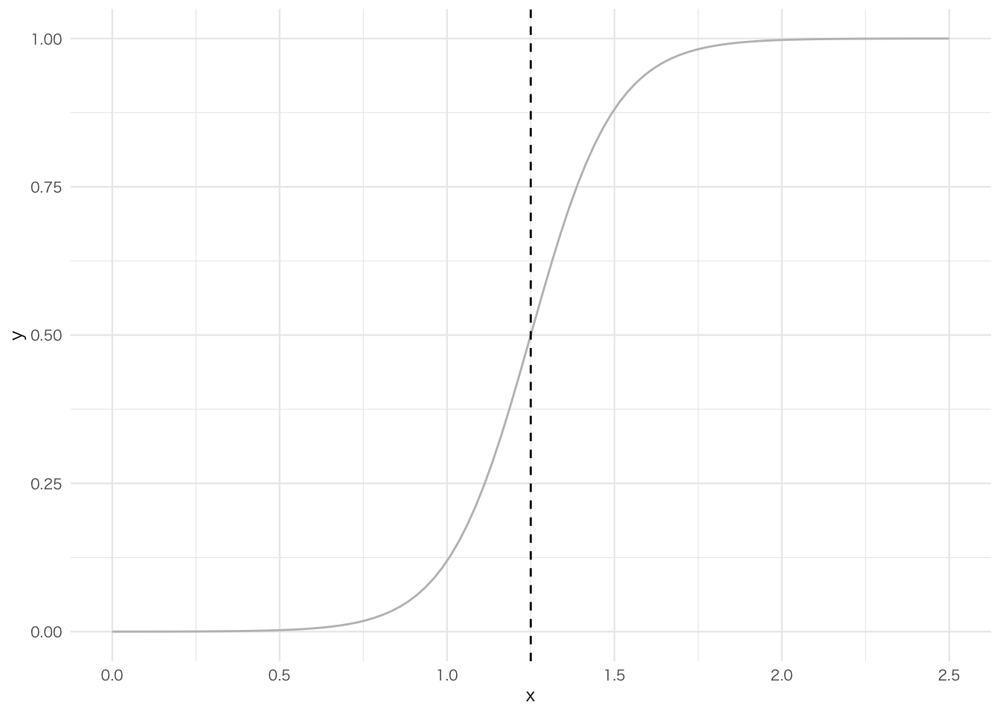
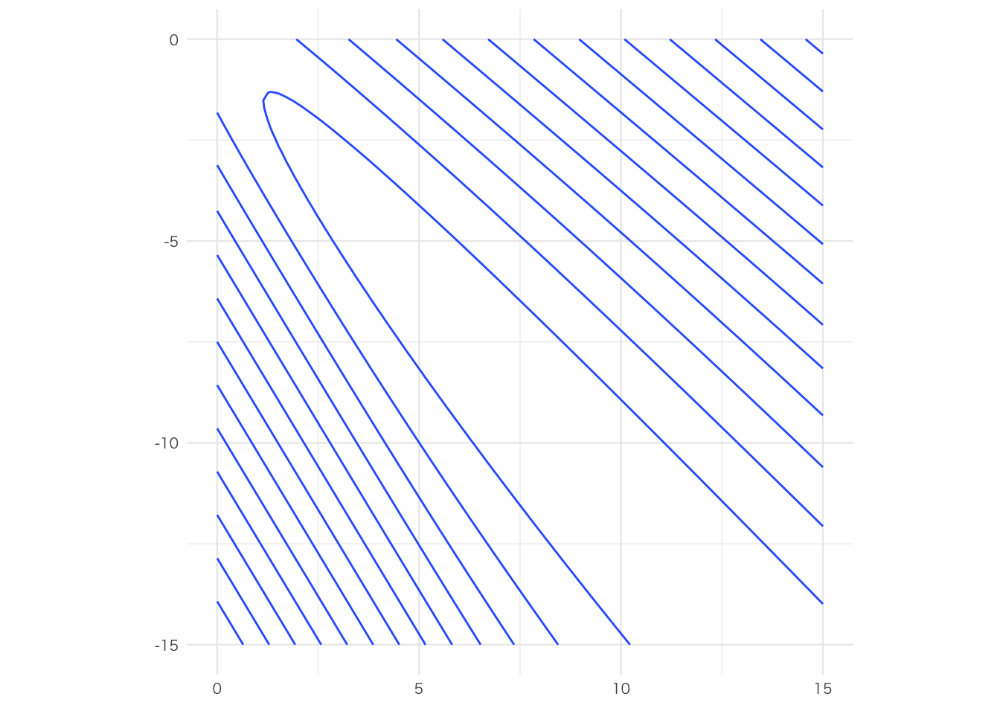
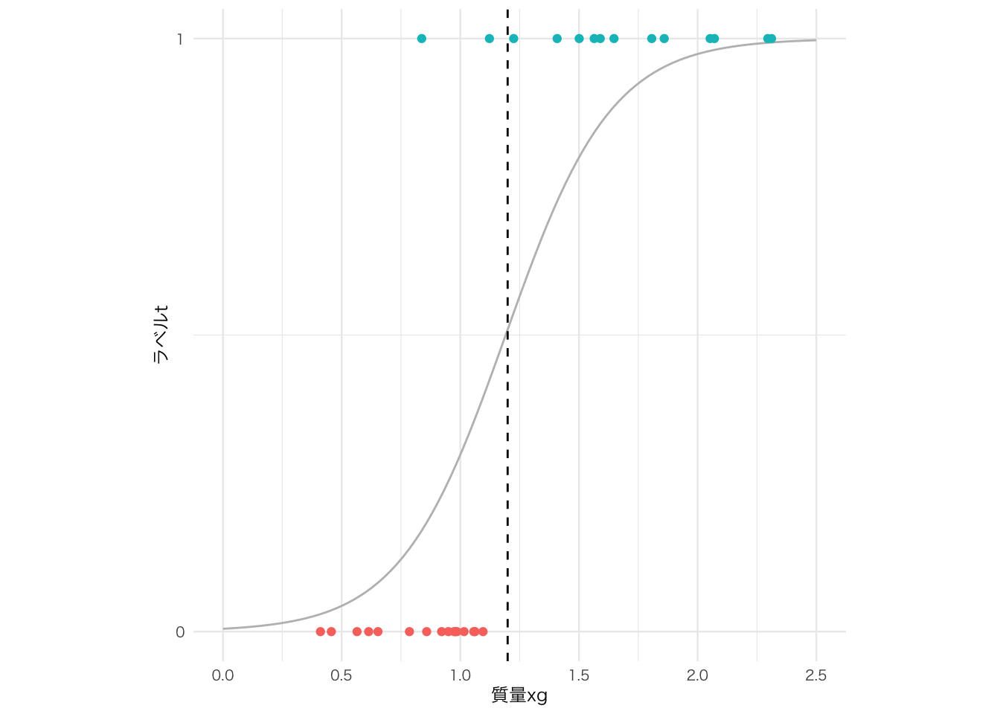

3 教師あり学習 : 分類
準備
まず，パッケージを読み込む．
内容
第1節
リスト 6-1-(1)
データ生成 ———
# Python
np.random.seed(seed=0) # 乱数を固定
X_min, X_max = 0, 2.5 # x の上限と下限（表示用）
N = 30 # データ数
col = ["cornflowerblue", "gray"] # クラス0と1の表示色
X = np.zeros(N) # 空のXを準備
T = np.zeros(N, dtype=np.uint8) # 空のTを準備
prm_s = [0.4, 0.8] # クラス0と1の分布の開始地点
prm_w = [0.8, 1.6] # クラス0と1の分布の幅
prm_pi = 0.5 # クラス0の全体に対する比率
for n in range(N):
r = np.random.rand()
T[n] = 0 * (r < prm_pi) + 1 * (r >= prm_pi) # (A)
X[n] = prm_s[T[n]] + np.random.rand() * prm_w[T[n]] # (B)
# データ表示
print("X =", np.round(X, 2))
print("T =", T)# R
set.seed(0)
X_min <- 0; X_max <- 2.5
N <- 30
col <- c('cornflowerblue', 'gray')
X <- rep(0, times = N)
t <- rep(0, times = N)
prm_s <- c(0.4, 0.8)
prm_w = c(0.8, 1.6)
prm_pi <- 0.5
for (n in 1:N) {
r <- runif(1)
t[n] <- 0 * (r < prm_pi) + 1 * (r >= prm_pi)
X[n] <- prm_s[t[n] + 1] + runif(1) * prm_w[t[n] + 1]
}X = 1.22 0.86 1.12 2.31 1.81 0.56 0.95 1.02 0.97 1.41 2.3 0.92 0.61 0.41 1.1 0.79 1.59 1.06 2.07 0.98 1.06 2.05 1.65 0.84 0.99 1.56 1.5 0.46 0.65 1.86T = 1 0 1 1 1 0 0 0 0 1 1 0 0 0 0 0 1 0 1 0 0 1 1 1 0 1 1 0 0 1リスト 6-1-(2)
データ分布表示 ———
メイン ———
リスト 6-1-(3)
ロジスティック回帰モデル ———
リスト 6-1-(4)
ロジスティック回帰モデルの表示 ———
# R
show_logistic <- function(w) {
x <- seq(X_min, X_max, length.out = 100)
y <- logistic(x, w)
df <- tibble(x = x, y = y) |>
mutate(id = 1:n())
p <- df |>
ggplot() +
geom_line(aes(x = x, y = y),
color = 'gray')
i <- df |>
filter(y > 0.5) |>
filter(y == min(y))
boundary <- (x[i$id - 1] + x[i$id]) / 2
p <- p +
geom_vline(xintercept = boundary, linetype = 'dashed')
return(list(p = p, boundry = boundary))
}テスト ———
dicision boundary = 1.25
リスト 6-1-(5)
平均交差エントロピー誤差 ———
テスト ———
リスト 6-1-(6)
平均交差エントロピー誤差の計算 ———
# Python
w0_n, w1_n = 80, 80 # 等高線表示の解像度
w0_min, w0_max = 0, 15
w1_min, w1_max = -15, 0
w0 = np.linspace(w0_min, w0_max, w0_n)
w1 = np.linspace(w1_min, w1_max, w1_n)
C = np.zeros((w1_n, w0_n))
for i0 in range(w0_n):
for i1 in range(w1_n):
w = np.array([w0[i0], w1[i1]])
C[i1, i0] = cee_logistic(w, X, T) # CEEを計算
ww0, ww1 = np.meshgrid(w0, w1) # 描画用座標の作成# R
w0_n <- 80; w1_n <- 80
w0_min <- 0; w0_max <- 15
w1_min <- -15; w1_max <- 0
w0 <- seq(w0_min, w0_max, length.out = w0_n)
w1 <- seq(w1_min, w1_max, length.out = w1_n)
C <- array(0, dim = c(w1_n, w0_n))
for (i0 in 1:w0_n) {
for (i1 in 1:w1_n) {
w <- c(w0[i0], w1[i1])
C[i0, i1] <- cee_logistic(w, X, t)
}
}
grid_w0w1 <- expand_grid(w0, w1)グラフ描画 ———
- サーフェス表示
# Python
ax = plt.subplot(1, 2, 1, projection="3d")
ax.plot_surface(
ww0, ww1, C,
color="blue", edgecolor="black", rstride=10, cstride=10, alpha=0.3,
)
ax.set_xlabel("$w_0$", fontsize=14)
ax.set_ylabel("$w_1$", fontsize=14)
ax.set_xlim(0, 15)
ax.set_ylim(-15, 0)
ax.set_zlim(0, 8)
ax.view_init(30, -95)- 等高線表示
# R
df <- grid_w0w1 |>
mutate(C = rep(NA, times = n()))
n <- 1
for (i in 1:w0_n) {
for (j in 1:w1_n) {
df$C[n] <- C[i, j]
n <- n + 1
}
}
df |>
ggplot() +
geom_contour(aes(w0, w1, z = C)) +
labs(x = element_blank(), y = element_blank()) +
xlim(w0_min, w0_max) + ylim(w1_min, w1_max) +
coord_fixed(ratio = (w0_max - w0_min) / (w1_max - w1_min))
リスト 6-1-(7)
平均交差エントロピー誤差の微分 ———
テスト ———
dCEE = 0.338119 0.426262リスト 6-1-(8)
ロジスティック回帰モデルのパラメータ最適化
メイン ———
グラフ描画 ———
# R
boundary <- show_logistic(w)
boundary$p +
geom_point(data = tibble(x = X, t = t),
mapping = aes(x = x, y = t,
color = as.factor(t))) +
xlim(X_min, X_max) +
coord_fixed(ratio = abs(X_max - X_min) / 1) +
labs(x = '質量xg', y = 'ラベルt') +
scale_y_continuous(breaks = c(0, 1),
labels = c(0, 1)) +
theme(legend.position = 'none')
結果表示 ———
w0 = 4.48 w1 = -5.33CEE = 0.53Boundary = 1.2 g第2節
リセット
リスト 6-2-(1)
データ生成 ———
# Python
np.random.seed(seed=1) # 乱数を固定
N = 100 # データの数
K = 3 # 分布の数
T3 = np.zeros((N, 3), dtype=int)
T2 = np.zeros((N, 2), dtype=int)
X = np.zeros((N, 2)) # 今までのX0とX1を統合してXで表す
X0_min, X0_max = -3, 3 # X0 の範囲、表示用
X1_min, X1_max = -3, 3 # X1 の範囲、表示用
prm_mu = np.array([[-0.5, -0.5], [0.5, 1.0], [1, -0.5]]) # 分布の中心
prm_sig = np.array([[0.7, 0.7], [0.8, 0.3], [0.3, 0.8]]) # 分布の分散
prm_pi = np.array([0.4, 0.8, 1]) # (A) 各分布への割合を決めるパラメータ
# 3クラス用のラベル"T3"を作成
for n in range(N): # 各データのループ
r = np.random.rand()
for k in range(K): # (B) 各クラスのループ
if r < prm_pi[k]: # クラスを決める
T3[n, k] = 1
break # クラスが決まったらkのループから抜ける
for k in range(2): # (C) 決まったT3に対して2次元のXを作成
X[n, k] = \
np.random.randn() * prm_sig[T3[n, :] == 1, k] \
+ prm_mu[T3[n, :] == 1, k]
# 2クラス用のラベル"T2"を作成
T2[:, 0] = T3[:, 0]
# T3のクラス1と2をまとめてT2のクラス1とする
T2[:, 1] = T3[:, 1] | T3[:, 2]# R
set.seed(1)
N <- 100
K <- 3
T3 <- array(0, dim = c(N, 3))
T2 <- array(0, dim = c(N, 2))
X <- array(0, dim = c(N, 2))
X0_min <- -3; X0_max <- 3
X1_min <- -3; X1_max <- 3
prm_mu <- array(c(-0.5, 0.5, 1, -0.5, 1.0, -0.5), dim = c(3, 2))
prm_sig <- array(c(0.7, 0.8, 0.3, 0.7, 0.3, 0.8), dim = c(3, 2))
prm_pi <- array(c(0.4, 0.8, 1), dim = c(3, 1))
for (n in 1:N) {
r <- runif(1)
for (k in 1:K) {
if (r < prm_pi[k]) {
T3[n, k] <- 1
break
}
}
for (k in c(1, 2)) {
X[n, k] <- rnorm(1) * prm_sig[T3[n,] == 1, k] + prm_mu[T3[n,] == 1, k]
}
}
T2[, 1] <- T3[, 1]
T2[, 2] <- T3[, 2] | T3[, 3]リスト 6-2-(2)
リスト 6-2-(3)
リスト 6-2-(4)
リスト 6-2-(5)
データ表示 ———
# R
show_data2d <- function(x, t) {
K <- ncol(t)
col <- c('gray', 'white', 'black')
df <- as.data.frame(x) |>
rename(X0 = 'V1',
X1 = 'V2') |>
mutate(C = rep(NA, times = n()))
for (i in 1:nrow(t)) {
c <- 1
for (j in 1:K) {
if (t[i, j] == 1) {
df$C[i] <- c
break
}
c <- c + 1
}
}
p <- df |>
ggplot() +
geom_point(aes(x = X0, y = X1,
fill = as.factor(C)),
shape = 21, color = 'black',
size = 3) +
xlim(X0_min, X0_max) + ylim(X1_min, X1_max) +
coord_fixed(ratio = 1) +
scale_fill_manual(name = 'クラス',
values = col,
labels = c('1', '2', '3'))
return(p)
}メイン ———